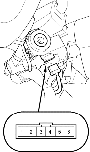
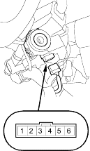

When the ignition key is not removed, the key-in beeper in the driver's multiplex control unit senses ground through the closed ignition key switch. When you open the driver's door, the beeper circuit senses ground through the closed door switch.
- Remove the steering column upper and lower covers (see page 17-9).
- Disconnect the 6P connector.

- Check for continuity between the No. 1 and No. 2 terminals.
- There should be continuity with the key in the ignition switch.
- There should be no continuity with the key removed.
- Remove the steering column upper and lower covers (see page 17-9).
- Disconnect the 6P connector.

- The LED should come on when power is connected to the No. 6 terminal and ground is connected to No. 5 terminal.